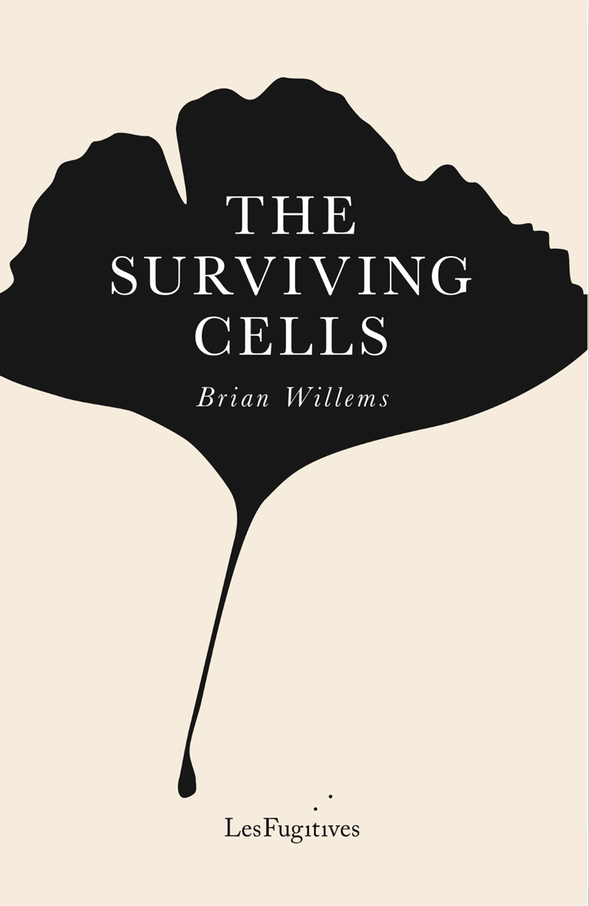
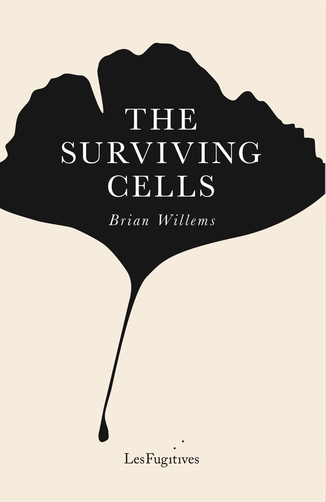

The Surviving Cells is forthcoming Autumn 2025 from Les Fugitives. Now available for pre-order.

Brian Willems was born in Minnesota in 1972 and lived there until 1996, when he moved to Prague. He now lives and works in Croatia, teaching literature at the University of Split and serving as director of its Studia Mediterranea centre. Brian’s poetry and prose have appeared in The Antioch Review, Poetry Salzburg Review, Things Magazine, Prague Literary Review and elsewhere. He is the author of several academic books, most recently Anger and Change in Korean American Literature (2025), Sham Ruins: A User's Guide (2022), and is co-editor, with Nicol Barria-Asenjo and Slavoj Žižek, of Global Manifestos for the 21st Century, with a foreword by Yanis Varoufakis (2023). He translates from Croatian into English, including work by Jurica Pavičić, and received a grant from the European Prize for Literature for his translation of Luka Bekavac's Gallery of Fine Arts in Osijek: Studies, Ruins. He is co-editor of LOOK Editions, has been a guest lecturer in the UK, USA, the Middle East, and continental Europe.
A list of his academic publications can be found here
The Surviving Cells is forthcoming Autumn 2025 from Les Fugitives. Now available for pre-order.

Email: brianwillems (at) gmail.com
Instagram: @willems.brian